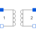

IdealTransformerIdeal transformer core with or without magnetization |

|
Information
This information is part of the Modelica Standard Library maintained by the Modelica Association.
The ideal transformer is a two-port circuit element;
in case of Boolean parameter considerMagnetization = false it is characterized by the following equations:
i2 = -i1*n; v2 = v1/n;
where n is a real number called the turns ratio.
Due to this equations, also DC voltages and currents are transformed - which is not the case for technical transformers.
In case of Boolean parameter considerMagnetization = true it is characterized by the following equations:
im1 = i1 + i2/n "Magnetizing current w.r.t. primary side"; psim1= Lm1*im1 "Magnetic flux w.r.t. primary side"; v1 = der(psim1) "Primary voltage"; v2 = v1/n "Secondary voltage";
where Lm denotes the magnetizing inductance.
Due to this equations, the DC offset of secondary voltages and currents decrement according to the time constant defined by the connected circuit.
Taking primary L1sigma and secondary L2ssigma leakage inductances into account,
compared with the basic transformer
the following parameter conversion can be applied (which leads to identical results):
L1 = L1sigma + M*n "Primary inductance at secondary no-load"; L2 = L2sigma + M/n "Secondary inductance at primary no-load"; M = Lm1/n "Mutual inductance";
For the backward conversion, one has to decide about the partitioning of the leakage to primary and secondary side.
Parameters (3)
| n |
Value: Type: Real Description: Turns ratio primary:secondary voltage |
|---|---|
| considerMagnetization |
Value: false Type: Boolean Description: Choice of considering magnetization |
| Lm1 |
Value: Type: Inductance (H) Description: Magnetization inductance w.r.t. primary side |
Connectors (4)
| p1 |
Type: PositivePin Description: Positive electrical pin of port 1 |
|
|---|---|---|
| n1 |
Type: NegativePin Description: Negative electrical pin of port 1 |
|
| p2 |
Type: PositivePin Description: Positive electrical pin of port 2 |
|
| n2 |
Type: NegativePin Description: Negative electrical pin of port 2 |
Used in Examples (1)
|
Modelica.Electrical.Analog.Examples Transformer circuit to show the magnetization facilities |
Used in Components (1)
|
Modelica.Electrical.MultiPhase.Ideal Multiphase ideal transformer |